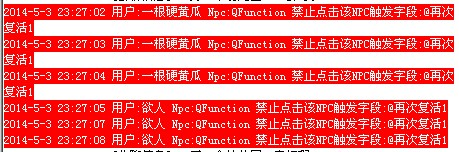

为什么提示禁止点击该NPC触发字段，如下图？

下面以一个死亡触发为例，不仅仅是死亡触发，引擎的所有触发都不允许玩家点击NPC触发，
例如：物品触发[@StdModeFunc]，套装触发[@GroupItemOn] [@GroupItemOff]，魔法触发[@MagTagFunc]，穿脱装备触发[@TakeOn] [@TakeOff]等等，就不一一举例了。
[@PlayDie]
<下一页/@下一页>
[@下一页]
<返回/@PlayDie>
;<返回/@PlayDie> 新引擎这里“@PlayDie”是引擎内部触发字段，禁止用户通过NPC点击来触发这个字段
;不仅仅“@PlayDie”不允许“@PlayDie1、 @PlayDie2、 @PlayDie死亡”等等都不允许，只有前面的字符和“@PlayDie”一样的后面不管增加什么字符都将不允许
;如果非要使用玩家点击NPC触发的，可以把上面的脚本改成如下,使用goto转一下
[@PlayDie]
<下一页/@下一页>
[@下一页]
<返回/@返回>
[@返回]
#ACT
goto @PlayDie
---------------------------------------------------------------------------------------------------
还有其他一些触发，也属于这类的，比如：
DelayCall 5000 @再次复活
SendCenterMsg 180 251 还剩余%d发放新手奖励. 0 30 @GiveNewHumanItem
“@再次复活”和“@GiveNewHumanItem”就会变成引擎内部触发，也是不允许用使用NPC点击来触发的
还有一些其他脚本命令带字段触发的，就不一一举例了。